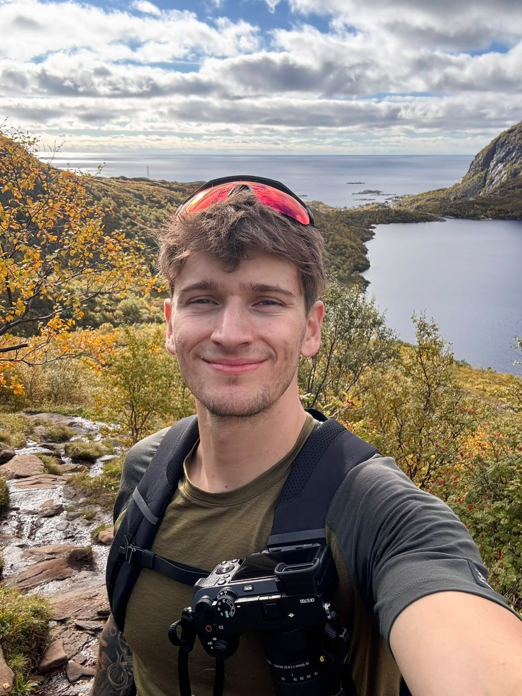

Portréty
od 2 500 Kč
- 1 hodina focení
- 15 upravených fotografií
- online galerie ke stažení
Portréty, mazlíčci, svatby

Fotím portréty, mazlíčky, svatby i krajinu. Nejraději pracuji s přirozeným světlem a v uvolněné atmosféře, díky které vznikají fotografie plné opravdových emocí a přirozených okamžiků.
Nemusíte umět pózovat ani vědět, co před objektivem dělat. Společně se domluvíme, jak bude focení probíhat, a já vás celým procesem provedu. Mým cílem je zachytit chvíle, ke kterým se budete rádi vracet i po letech.
Napsat zprávuOsobní i profesní portréty, v přírodě i ve městě.


Vaši čtyřnozí mazlíčci v přizozeném prostředí.


Emoce, detaily a okamžiky, které se už nevrátí.


Místa, světlo a nálada.


od 2 500 Kč
od 2 500 Kč
od 15 000 Kč
na dotaz
Napište mi, co máte na mysli, a navrhnu termín i postup.
Napsat zprávu